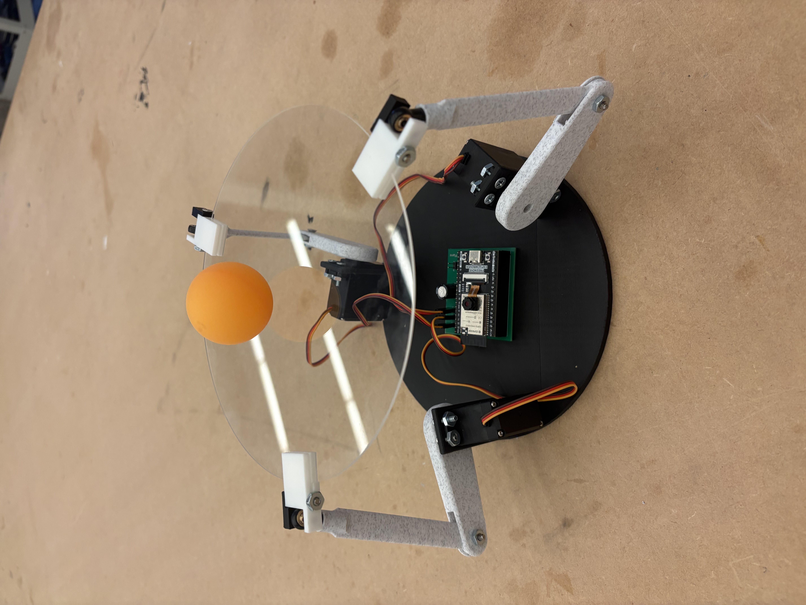
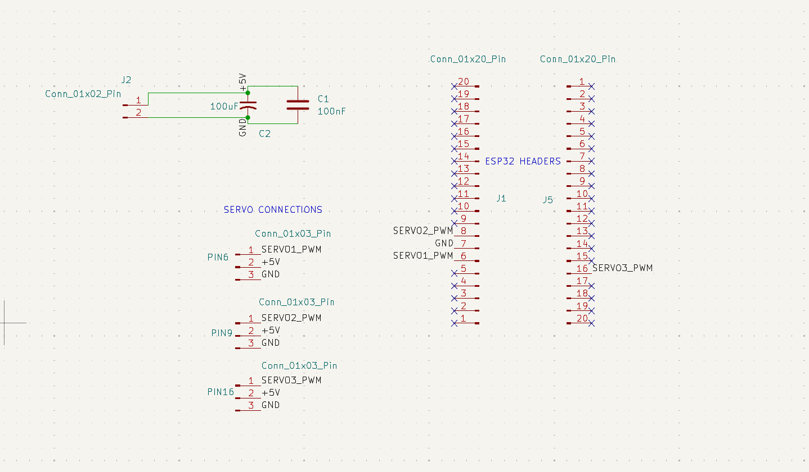
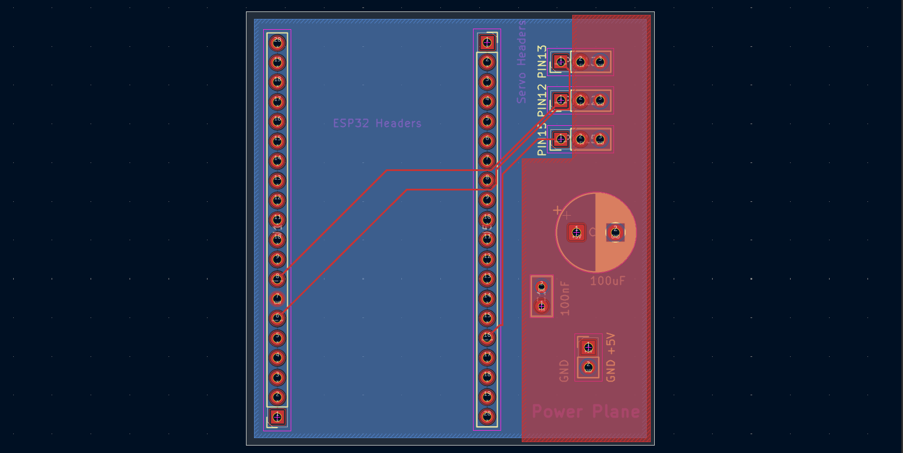
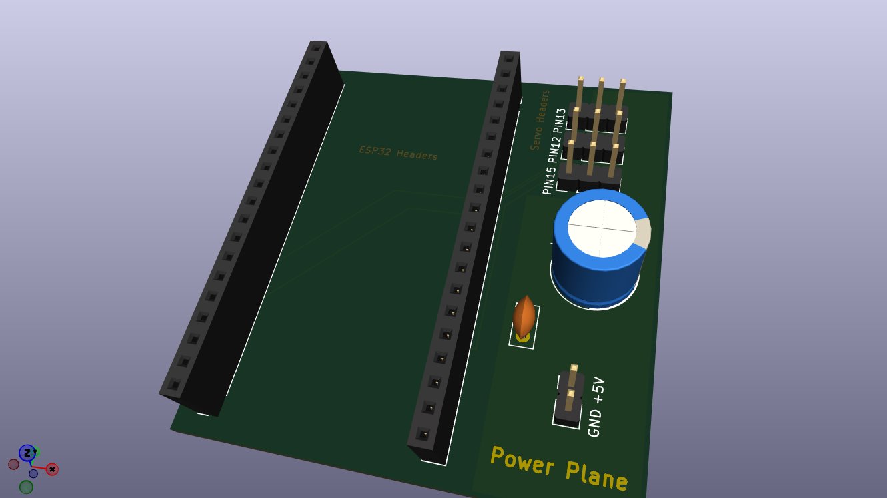
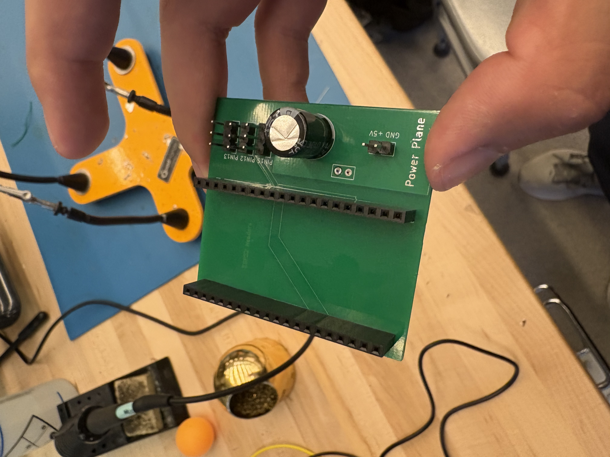
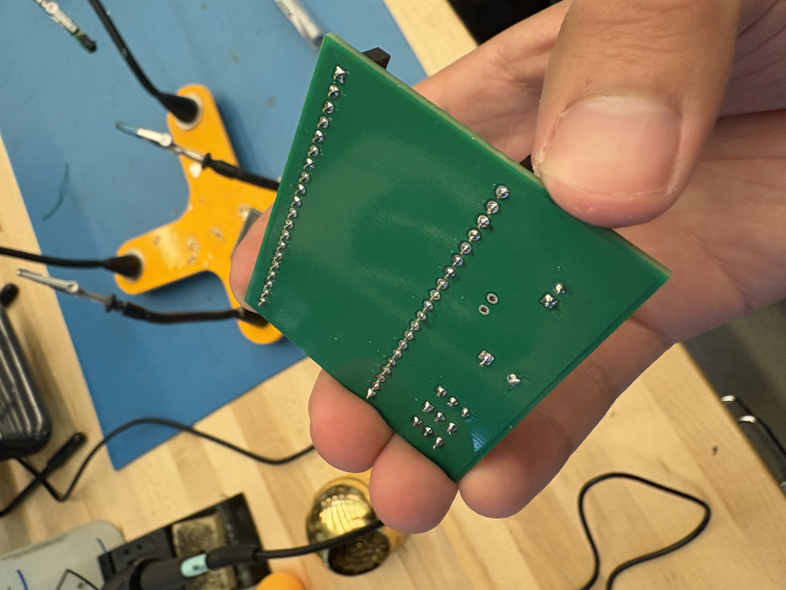

The frame was designed in SolidWorks following the classic 3-RPS Parallel Manipulator mechanics. Final servo angles (a1, a2, a3) were computed via Inverse Kinematics using the following pipeline:
- Find the tilt angles of the platform — the outputs from the x and y PID functions.
- Apply the tilt angles to the plane equation \( Z(x,y) = z_0 + ax + by \), where \( a = \arctan(\text{tilt}_x) \), \( b = \arctan(\text{tilt}_y) \), and \( z_0 \) is the nominal height of the platform with no tilt.
- Given the leg height \( Z(x,y) \), solve for the mechanical angle between the servo arm and the horizontal using trigonometry and the Law of Cosines.
- Convert the mechanical angle to a servo angle using a fixed offset: \( \text{Command}(\theta) = \text{Offset} - \text{Mechanical}(\theta) \)

The purpose of this PCB is to eliminate the need for jumper cables and make the design more modular. It also gave me hands-on experience with the full PCB manufacturing process: from designing the schematic to uploading Gerber files to a manufacturer.
The servos are powered from an external DC supply rather than directly from the ESP32 pins, since each ESP32 pin can supply only 20mA while each servo draws 170–290mA under load. Decoupling capacitors were also added between power and ground to suppress rapid current changes and background noise.
Through this project I learned how to use Net Labels in KiCad to connect pins without drawing explicit wires, and how to assign footprints to each schematic component.

Originally I routed the power nets using traces, but the high servo current demanded trace widths of 3.17mm - too wide to be practical. Using DigiKey's PCB Trace Width Calculator confirmed this, so I switched to copper pours instead. The ground plane fills the entire back copper layer, while the power plane occupies roughly half of the front copper layer.



While the logic of the PCB worked as intended (traces were correctly routed and the connections yielded appropiate values when measured with multimeter), the distance between the female pin headers was 1mm too wide for the ESP32 male headers.
The ESP32 Wrover Module includes a built-in camera with a standard script, CameraWebServer.ino, that lets users interface with it over a network. My .ino code uses that standard scripts as its backbone, with two key modifications: the ESP32 creates its own Access Point (AP) instead of connecting to an existing WiFi network, and servo actuation logic is added on top.
Once a computer connects to the ESP32's AP, JPEG frames from the camera are streamed to Python via URL. On the Python side, OpenCV decodes the frames and a color mask isolates the orange ping pong ball. The center of the camera frame serves as the reference position, and the ball's x/y coordinates are tracked in real time. The error between the ball's position and the frame center is fed into the PID controller, whose output is then passed to the IK pipeline described above.
Initially, servo angles were sent from Python to the ESP32 over HTTP. This caused problems because HTTP requires a full TCP handshake where the sender must wait for an acknowledgment before sending the next packet. If a packet was lost, TCP would retransmit it, adding latency. The Python script kept timing out while waiting for the ESP32 to respond. As a partial fix, I implemented a two-thread mutex: one thread runs the main loop writing the latest servo angle, and a worker thread grabs and sends that angle over a persistent session pool. This reduced overhead but did not fully solve the timeout issue.
The real fix was switching from HTTP to UDP. UDP is connectionless: it sends a packet to an IP address and port and moves on immediately without waiting for any acknowledgment. This eliminates the blocking behavior entirely, gives lower latency, and never stalls the data stream. Python doesn't know if a message arrived, but for this application, that is not necessary.